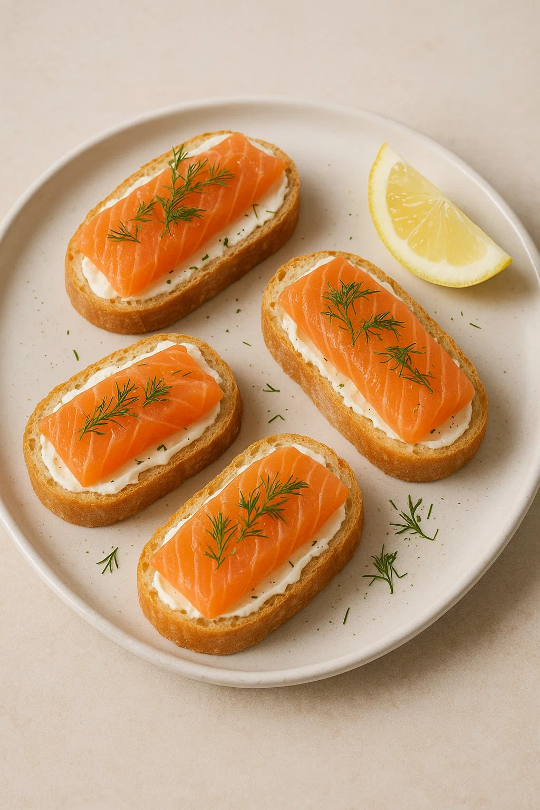

День 1: Овощной салат в банке
Ингредиенты:
- 1 средний огурец
- 2 спелых помидора
- 1/2 болгарского перца
- 50 г зелёных оливок
- 100 г феты
- 2 ст. л. оливкового масла
- Соль, чёрный перец, сушёный орегано
Приготовление:
- Нарежьте овощи кубиками.
- В чистую банку слоями уложите: огурцы, перец, помидоры, оливки и фету.
- Смешайте масло с солью, перцем и орегано, полейте сверху.
- Закройте крышкой и храните в холодильнике до подачи.

День 2: Куриные рулетики с зеленью
Ингредиенты:
- 2 куриных филе
- 50 г свежего шпината
- 30 г сыра моцарелла
- 1 зубчик чеснока
- Соль, перец, оливковое масло
- Зубочистки или шпажки
Приготовление:
- Каждое филе разрежьте вдоль, отбейте до 1 см.
- Выложите шпинат, ломтики моцареллы и слегка раздавленный чеснок.
- Сверните рулетом, закрепите шпажками, посолите, поперчите.
- Обжарьте на гриле или сковороде-гриль по 4 минуты с каждой стороны.

День 3: Холодный томатный гаспачо
Ингредиенты:
- 6 спелых помидоров
- 1 огурец
- 1 сладкий перец
- 1 маленькая луковица
- 1 зубчик чеснока
- 2 ст. л. оливкового масла
- 2 ст. л. красного винного уксуса
- Соль, перец
Приготовление:
- Нарежьте все овощи крупными кусками.
- Смешайте в блендере с маслом, уксусом, солью и перцем до однородности.
- Охладите не менее 2 часов.
- Разлейте по стаканам и украсьте зеленью.

День 4: Мини-бутерброды с лососем
Ингредиенты:
- 1 багет или чиабатта
- 150 г слабосолёного лосося
- 50 г сливочного сыра
- Свежий укроп
- Лимонный сок
Приготовление:
- Нарежьте багет ломтиками по 1 см.
- Смажьте каждый ломтик сливочным сыром.
- Сверху выложите полоску лосося, сбрызните лимоном и посыпьте укропом.

День 5: Лаваш с тунцом и овощами
Ингредиенты:
- 2 листа тонкого лаваша
- 1 банка тунца в собственном соку
- 1 помидор
- 1/2 огурца
- Листья салата
- 2 ст. л. йогурта
- Соль, перец
Приготовление:
- Смешайте тунец с йогуртом, посолите и поперчите.
- Выложите на лаваш: салат, нарезанные овощи и тунцовую пасту.
- Сверните плотным рулетом и разрежьте пополам.

День 6: Шашлычки из халуми и овощей
Ингредиенты:
- 200 г сыра халуми
- 1 цукини
- 1 болгарский перец
- Черри-помидоры
- Оливковое масло, соль, перец
- Шпажки
Приготовление:
- Нарежьте халуми и овощи кубиками примерно 2×2 см.
- Нанизайте чередуя сыр и овощи на шпажки, сбрызните маслом и приправьте.
- Обжарьте на гриле или сковороде-гриль по 2–3 минуты с каждой стороны.

День 7: Фруктовый салат с лаймовым сиропом
Ингредиенты:
- 1 яблоко
- 1 груша
- 150 г клубники
- 1 лайм
- 1 ст. л. мёда
Приготовление:
- Нарежьте фрукты крупными кусками и сложите в миску.
- Смешайте сок лайма с мёдом.
- Полейте сиропом, аккуратно перемешайте и охладите перед подачей.